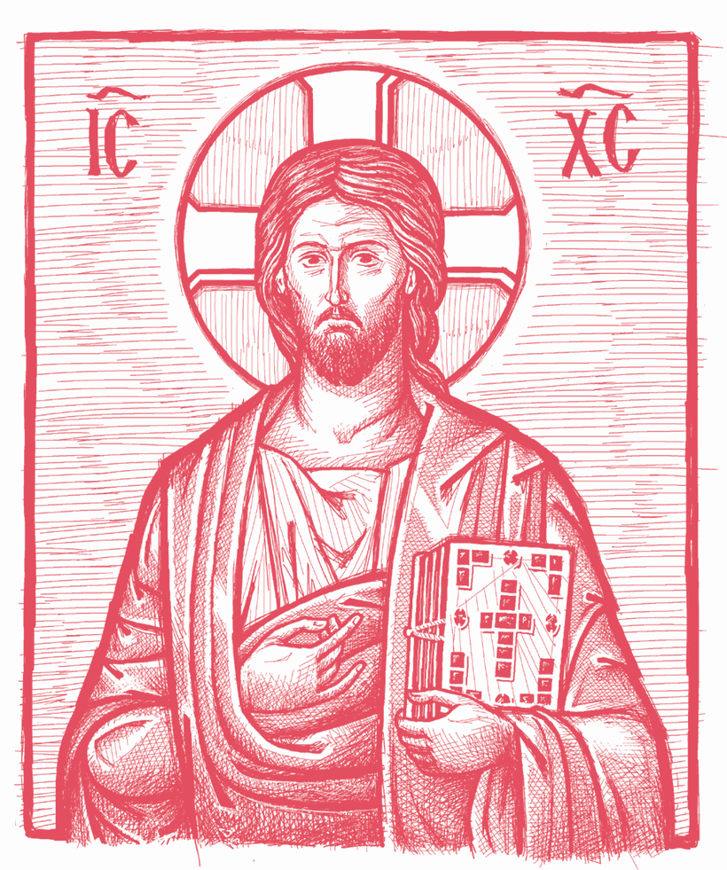

Morning Prayers
Upon rising from sleep:
In the Name of the Father and
of the Son and of the Holy Spirit. Amen.
After standing a little while in silence, waiting till all the
senses are calm, one may make three prostrations, saying:
Lord Jesus Christ, Son of God,
have mercy on me, a sinner!
And then the following:
THROUGH the prayers of our holy fathers, O Lord Jesus Christ our God, have mercy on us. Amen.
Glory to thee, our God, glory to thee.
O heavenly King, the Comforter, the Spirit of truth, who art everywhere present and fillest all things, Treasury of blessings, and Giver of life: come and abide in us, and cleanse us from every impurity, and save our souls, O Good One.
Holy God, Holy Mighty, Holy Immortal: have mercy on us. (thrice)
Glory to the Father and to the Son and to the Holy Spirit, now and ever and unto ages of ages. Amen.
O Most Holy Trinity, have mercy on us. Lord, cleanse us from our sins. Master, pardon our transgressions. Holy One, visit and heal our infirmities, for thy Name’s sake.
Lord, have mercy. (thrice)
Glory to the Father and to the Son and to the Holy Spirit, now and ever and unto ages of ages. Amen.
Our Father, who art in heaven, hallowed be thy Name. Thy kingdom come. Thy will be done on earth as it is in heaven. Give us this day our daily bread; and forgive us our trespasses, as we forgive those who trespass against us; and lead us not into temptation, but deliver us from the evil one.
And these troparia:
Rising from sleep we fall down before thee, O Good One, and with the angels’ song we cry to thee, All-powerful: Holy, Holy, Holy art thou, O God: through the Theotokos, have mercy on us.
Glory to the Father…
O Lord, who hast raised me from bed and from sleep, enlighten my mind and heart, and open my lips that I may sing of thee, O Holy Trinity: Holy, Holy, Holy art thou, O God: through the Theotokos, have mercy on us.
Now and ever…
The Judge shall come suddenly, and the deeds of each shall be exposed. But at midnight we cry out with fear: Holy, Holy, Holy art thou, O God: through the Theotokos, have mercy on us.
Lord, have mercy. (twelve times)
Rising from sleep, I thank thee, O Holy Trinity. For, in the abundance of thy goodness and patience, thou hast not been angry with me, idler and sinner though I be, nor hast thou destroyed me together with my iniquities; but thou hast shown thy usual love for mankind, and hast raised me up as I lay helpless, that I might rise early and glorify thy dominion. Enlighten now the eyes of my mind and open my lips that I may study thy words, and come to understand thy commandments, and accomplish thy will, and hymn thee in heartfelt confession, and praise thine all-holy Name, of the Father and of the Son and of the Holy Spirit, now and ever and unto ages of ages. Amen.
Come, let us worship God our King.
Come, let us worship and fall down before Christ, our King and our God.
Come, let us worship and fall down before Christ himself, our King and our God.
Psalm 50
Have mercy on me, O God, according to thy great mercy, and according to the multitude of thy compassions blot out my transgression. Wash me thoroughly from my iniquity, and cleanse me from my sin.
For I know my iniquity, and my sin is continually before me. Against thee only have I sinned, and done what is evil before thee, that thou mightest be justified in thy words, and prevail when thou art judged. For, behold, I was conceived in iniquities, and in sins did my mother bear me. For, behold, thou hast loved truth, the unknown and hidden things of thy wisdom hast thou made known unto me.
Thou shalt sprinkle me with hyssop, and I shall be cleansed; thou shalt wash me, and I shall be made whiter than snow. Thou shalt cause me to hear joy and gladness, the bones that have been humbled shall rejoice. Turn thy face away from my sins, and blot out all my iniquities. Create in me a clean heart, O God, and renew a right spirit within me. Cast me not away from thy presence, and take not thy Holy Spirit from me. Restore unto me the joy of thy salvation, and establish me with a ruling spirit. I will teach transgressors thy ways, and the ungodly shall return to thee. Deliver me from blood-guiltiness, O God, thou God of my salvation, and my tongue shall rejoice in thy righteousness.
O Lord, thou shalt open my lips, and my mouth shall declare thy praise. For if thou hadst desired sacrifice, I would have given it; thou wilt not be pleased with whole-burnt offerings. A sacrifice to God is a broken spirit, a broken and humbled heart God will not despise.
Do good, O Lord, in thy good pleasure unto Zion, and let the walls of Jerusalem be built. Then shalt thou be pleased with a sacrifice of righteousness, with oblation and whole-burnt offerings. Then shall they offer bullocks upon thine altar.
The Symbol of Faith
I believe in one God, the Father Almighty, Maker of heaven and earth, and of all things visible and invisible. And in one Lord Jesus Christ, the Son of God, the Only-begotten, begotten of the Father before all ages; Light of Light, true God of true God; begotten, not made; of one essence with the Father; by whom all things were made; who for us men and for our salvation came down from heaven, and was incarnate of the Holy Spirit and the Virgin Mary, and became man; and he was crucified for us under Pontius Pilate, and suffered, and was buried; and the third day he rose again, according to the Scriptures, and ascended into heaven, and sits at the right hand of the Father; and he shall come again with glory to judge the living and the dead; whose kingdom shall have no end.
And in the Holy Spirit, the Lord, the Giver of life, who proceeds from the Father; who with the Father and the Son together is worshipped and glorified; who spoke by the prophets. In One, Holy, Catholic, and Apostolic Church. I acknowledge one baptism for the remission of sins. I look for the resurrection of the dead, and the life of the world to come. Amen.
First Prayer
by Saint Macarius the Great
O God, cleanse me, a sinner, even though I have done nothing good before thee: yet deliver me from the evil one, and let thy will be done in me, that I may open my unworthy lips without condemnation and praise thy holy Name, of the Father and of the Son and of the Holy Spirit, now and ever and unto ages of ages. Amen.
second Prayer: by the same
Rising from sleep, I offer thee a midnight song, O Sav- ior. I fall down and cry out to thee: let me not fall asleep in the death of sin, but be gracious to me, O thou who wast voluntarily crucified; and raise me quickly, for I lie in laziness, and save me as I stand at prayer; after the night’s sleep, O Christ my God, shine upon me a sinless day and save me.
third Prayer: by the same
Rising from sleep, I run to thee, O Master who lovest mankind; thy loving-kindness rouses me to do thy work. I pray thee: help me at all times and in all things, and deliver me from every evil of this world and from the meddling of the devil; save me and lead me into thine eternal kingdom. For thou art my Creator, the providential Giver of every good. All my hope is in thee, and to thee I give the glory, now and ever and unto ages of ages.
fourth Prayer: by the same
O Lord, in thine abundant goodness and great compassion thou hast granted me, thy servant, to pass the night unassailed by any evil of the enemy. O Master and Creator of all, by thy true light make me worthy to accomplish thy will with an illumined heart, now and ever and unto ages of ages. Amen.
fifth Prayer: by the same
O Lord, God Almighty, who dost accept the thrice-holy hymn from thy heavenly hosts: accept from me, thine unworthy servant, this song at the rising of the sun. Grant that at every season and hour of my life I may glorify thee, the Father and the Son and the Holy Spirit, now and ever and unto ages of ages. Amen.
sixth Prayer
by Saint Basil the Great
O Lord Almighty, God of powers and of all flesh, who livest on high yet takest care for things below, who triest hearts and reins and clearly foreknowest the secrets of men: thou art the Light without beginning, who ever art, in whom there is neither variation nor shadow of change. O King immortal, accept the prayers which we, trusting in the multitude of thy compassions, now offer thee from defiled lips. Forgive all the iniquities we have committed in deed or word or thought, in knowledge or in ignorance. Cleanse us from all defilement of flesh and spirit. Grant us to pass through the entire night of this present life with wakeful heart and sober mind, awaiting the coming of the radiant day of the appearing of thine Only-begotten Son, our Lord and God and Savior Jesus Christ, when the Judge of all shall come with glory to reward each according to his deeds. May we not be found fallen and idle, but alert and roused to action, prepared to enter into his joy and the divine bridal chamber of his glory, where the voice of those who feast is unceasing, and the sweetness of those who behold the ineffable beauty of thy countenance is beyond telling. For thou art the true Light that enlightens and sanctifies all things, and all creation doth extol thee in song, unto ages of ages. Amen.
seventh Prayer: by the same
We bless thee, O God Most High and Lord of mercies, who ever doest among us great and unsearchable things, glorious and extraordinary, which cannot be numbered, who grantest to us sleep for rest from our infirmities and repose from the burdens of our much-toiling flesh. We thank thee that thou hast not destroyed us with our sins but hast loved us as always, and though we are sunk in despair, thou hast raised us up to glorify thy might. Therefore, we implore thine incomparable goodness to enlighten the eyes of our understanding and to raise up our minds from the heavy sleep of indolence: open our mouth and fill it with thy praise, that we may be able undistracted to sing and chant and confess unto thee, who art God, glorified in all and by all, the Father without beginning, together with thine Only-begotten Son, and thine all-holy, good, and life-giving Spirit, now and ever and unto ages of ages. Amen.
eighth Prayer
A Midnight Song to the Theotokos
I sing thy grace, O Lady, and beseech thee: grant grace to my mind. Teach me to walk aright on the path of Christ’s commandments. Strengthen me to keep watch with song, dispelling the torpor of sleep. I am bound by fetters of sin: free me by thy prayers, O Bride of God. Guard me by night and by day, delivering me from foes that war against me. Thou didst bear God, the Giver of life: give life to me, who am slain by passions. Thou didst bear the Light that knows no evening: enlighten my blinded soul. O wondrous palace of the Master, make of me a home for the divine Spirit. Thou didst bear the Physician: heal my soul of its besetting passions. I am tossed in the tempest of life: direct me toward the path of repentance. Deliver me from the eternal fire, from the wicked worm, and from hell. Make me not a joy of demons, though I am guilty of many sins. Make me new, O most immaculate Lady: I have grown old and unfeeling in my sins. Keep me away from every torment, and pray fervently to the Master of all. Grant that I may inherit the joys of heaven, together with all the saints. Most pure and holy Virgin, give ear to the voice of thine unfruitful servant. Grant me a torrent of tears to wash out the filth from my soul. The groans of my heart I offer thee unceasingly: open thy heart, O Lady. Accept my prayerful service, and offer it up to the God of compassion. Thou who art far higher than the angels, raise me far above the world’s confusion. O bright and heavenly shade, overshadow and enlighten me with spiritual grace. Though my hands and lips are defiled by sin, nevertheless I raise them in praise of thee, all-immaculate Queen. Deliver me from soul-corrupting dangers, and pray fervently to Christ, to whom are due honor and worship, now and ever and unto ages of ages. Amen.
ninth Prayer
To Our Lord Jesus Christ
My most merciful and all-merciful God, O Lord Jesus Christ: in thy great love, thou didst come down and take flesh in order to save all. And so I pray thee, O Savior: save me by grace. If thou shouldst save me because of my deeds, this would not be a gift, but merely a duty. Truly, thou aboundest in compassion and art inexpressibly merciful; for thou hast said, O my Christ: ‘He who believes in me shall live and never see death.’ If faith in thee saves the desperate, behold: I believe. Save me, for thou art my God and my Creator. May faith be accounted to me in place of deeds, for thou shalt find no deeds to justify me. May my faith suffice for everything: may it answer for me; may it justify me; may it make me a partaker of thine eternal glory. Do not let Satan seize me and boast that he has torn me from thy hand and fold; but rather, Christ my Savior, save me whether I want it or not. Come quickly, hurry, for I am perishing: for thou art my God from my mother’s womb. O Lord, grant that now I may love thee as I once loved sin, and that I may labor for thee without laziness just as I once labored for Satan the deceiver. All the more shall I labor for thee, my Lord and God, Jesus Christ, all the days of my life, now and ever and unto ages of ages. Amen.
tenth Prayer
To the Guardian Angel
O holy angel, standing guard over my wretched soul and my passionate life: do not abandon me, a sinner, neither depart from me because of my lack of self-control. Leave no room for the evil demon to gain control over me by subduing this mortal body. Strengthen my weak and feeble hand, and guide me toward the path of salvation. O holy angel of God, the guardian and protector of my wretched soul and body: forgive me all the sorrows I have caused thee every day of my life; and if I have sinned during the night now past, yet protect me throughout the present day. Keep me from every temptation of the enemy, lest I anger God by some sin. Pray to the Lord on my behalf, that he may establish me in his fear and make me, his servant, worthy of his goodness. Amen.
eleventh Prayer
To the Most Holy Theotokos
O my Lady, most holy Theotokos, through thy holy and all-powerful prayers, drive from me, thy humble and wretched servant, despair, forgetfulness, indiscretion, indifference, and all filthy, evil, and blasphemous thoughts, removing them from my wretched heart and darkened mind. Extinguish the flame of my passions, for I am poor and wretched. Deliver me from my many wicked memories and plans, and free me from all evil activity. For thou art blessed by all generations, and thy most precious name is glorified unto ages of ages. Amen.
And these verses:
Rejoice, O Virgin Theotokos, Mary, full of grace, the Lord is with thee. Blessed art thou among women, and blessed is the fruit of thy womb: for thou hast borne the Savior of our souls.
Pray to God for me, O holy [name of your patron saint], pleasing to God, for with fervor I run to thee, swift helper and intercessor for my soul.
O Lord, save thy people and bless thine inheritance. Grant victories to the Orthodox Christians over their adversaries, and by virtue of thy Cross preserve thy habitation.
• During fasting seasons, on Monday through Friday,
we say the following prayer:
Prayer of Saint Ephraim
O Lord and Master of my life, give me not a spirit of sloth, despair, lust of power, and idle talk. (prostration) But give rather a spirit of chastity, humility, patience, and love to thy servant. (prostration) Yea, O Lord and King, grant me to see my own transgressions, and not to judge my brother: for blessed art thou unto ages of ages. Amen. (prostration) O God, cleanse me a sinner. (12 times, with bows)
Then the entire Prayer of St. Ephraim is repeated
with a single prostration at its conclusion. •
It is truly meet to bless thee, O Theotokos, ever-blessed and most pure and the Mother of our God. More honorable than the cherubim and more glorious beyond compare than the seraphim, without corruption thou gavest birth to God the Word: true Theotokos, we magnify thee. (prostration)
Glory to the Father and to the Son and to the Holy Spirit, now and ever and unto ages of ages. Amen.
Lord, have mercy. (thrice)
Lord Jesus Christ, Son of God, through the prayers of thy most pure Mother, of my holy guardian angel, of [name of your patron saint], of [saint(s) of the day], and of all the saints: save me, a sinner. Amen.
